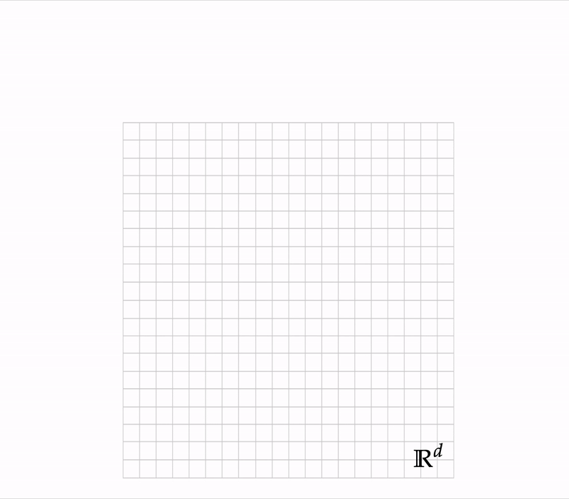
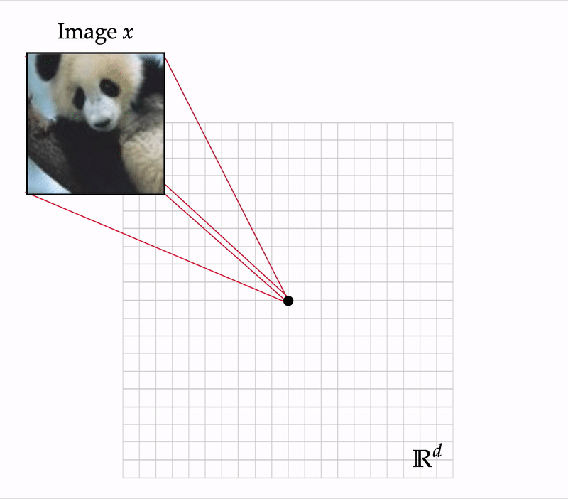

3 minutes
Adversarial Robustness with Semi-Infinite Constrained Learning
Alexander Robey, Luiz F. O. Chamon, George J. Pappas, Hamed Hassani, Alejandro Ribeiro
Abstract. Despite strong performance in numerous applications, the fragility of deep learning to input perturbations has raised serious questions about its use in safety-critical domains. While adversarial training can mitigate this issue in practice, state-of- the-art methods are increasingly application-dependent, heuristic in nature, and suffer from fundamental trade-offs between nominal performance and robustness. Moreover, the problem of finding worst-case perturbations is non-convex and underparameterized, both of which engender a non-favorable optimization landscape. Thus, there is a gap between the theory and practice of adversarial training, particularly with respect to when and why adversarial training works. In this paper, we take a constrained learning approach to address these questions and to provide a theoretical foundation for robust learning. In particular, we leverage semi-infinite optimization and non-convex duality theory to show that adversarial training is equivalent to a statistical problem over perturbation distributions, which we characterize completely. Notably, we show that a myriad of previous robust training techniques can be recovered for particular, sub-optimal choices of these distributions. Using these insights, we then propose a hybrid Langevin Monte Carlo approach of which several common algorithms (e.g., PGD) are special cases. Finally, we show that our approach can mitigate the trade-off between nominal and robust performance, yielding state-of-the-art results on MNIST and CIFAR-10. Our code is available at: https://github.com/arobey1/advbench.
Summary
In this paper, we revisit the classicial problem of training a classifier to be robust against imperceptible perturbations of data. In a litany of past work, researchers have shown that such perturbations can cause state-of-the-art classifiers to misclassify data with high confidence. Indeed, this problem has received a somewhat staggering amount of attention over the last few years, in part because it reveals a fundamental discrepancy between how deep neural networks and humans learn.
The goal of this post is threefold:
- First, I’ll introduce the problem setting for (adversarially) robust deep learning.
- Next, I’ll formalize the setting.
A primer on image classification
In image classification tasks, we generally assume that our data consists of images $x\in\mathbb{R}^d$, where $d$ is the number of pixels in the image, and corresponding labels $y\in\mathcal{Y} := \{1, \dots, k\}$, where $y$ captures the contents of the image.

Furthermore, we assume that our data is distributed according to an unknown joint distribution $\mathcal{D}$. In standard (i.e. non-robust) supervised learning, our job is to find a classifier which can correctly predict the label $y$ of the corresponding image $x$ when $(x,y)\sim\mathcal{D}$. That is, given a family of classifiers $f_\theta$ parameterized by a vector $\theta\in\Theta\subset\mathbb{R}^n$, we’re looking for a classifier $f_{\theta^\star}$ such that
$$f_{\theta^\star}(x) = y \quad\text{whenever}\quad (x,y)\sim\mathcal{D}.$$
The problem of obtaining such a classifier can be formalized via the following risk minimization problem:
$$P^\star_\text{std} \triangleq \min_{\theta\in\Theta} \mathbb{E}_{(x,y)\sim\mathcal{D}} \left[ \ell(f_\theta(x),y) \right] \tag{P-STD}$$
where $\ell:\mathcal{Y}\times\mathcal{Y}\to\mathbb{R}_{\geq0}$ is a suitable loss function (e.g. the cross-entropy or squared loss) and (P-STD) denotes the optimal value of the problem. In words, this optimization problem says that we will select a parameter $\theta$ which minimizes the average loss over the data distribution $\mathcal{D}$.
Formulating the robust training problem
In the setting of adversarial robustness, we consider a slightly different problem. Rather than directly classifying images $x$ drawn according to $\mathcal{D}$, we assume that there is an adversary which can perturb the data via a small, additive perturbation. To make this formal, we assume that an adversary can apply a perturbation $\delta\in\Delta$ via $x\mapsto x+\delta =: x'$, where $\Delta$ denotes a pre-specified perturbation set. For instance, one commone perturbation set if a norm-ball of radius $\epsilon$:
$$\Delta = \{ \delta\in\mathbb{R}^d : ||\delta||_\infty \leq \epsilon \}.$$
This particualr choice of perturbation set is appealing because it allows an adversary to additively perturb an image in a pixle-wise fashion.

Just as in the non-adversarial setting, we can again formulate the problem of
$$\min_\theta \mathbb{E}_{(x,y)} \left[ \max_{\delta\in\Delta} \ell(f_\theta(x+\delta),y) \right]$$